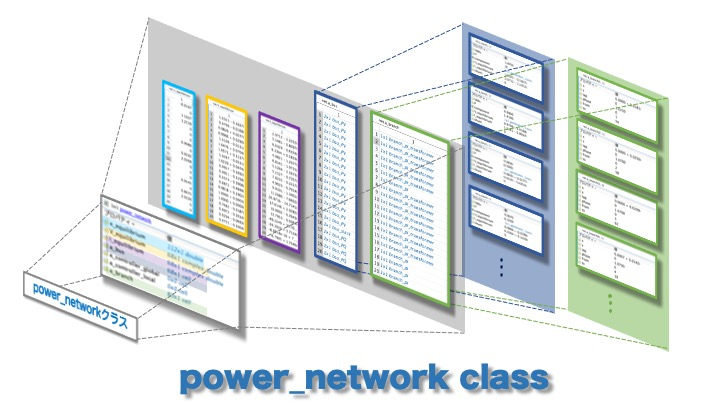

パラメータの読み方¶
今回はIEEE68busモデルを定義したモデルを例に解説します。
以下のコマンドを実行すると下図の電力系統モデルが定義できるので、是非各々でも手元で動かして照らし合わせながら読み進めると分かりやすいと思います。ワークスペースからnetをダブルクリックし、各プロパティの情報を見ることができます。
matlab
net = network_IEEE68bus;

power_networkクラスには以下のプロパティにデータを整理して格納しています
・平衡点の値を格納しているプロパティ ~_equilibrium¶
power_networkクラスにはequilibriumという名のつくプロパティが3つあります。
x_equilibrium
このプロパティには系統上の機器の状態変数の平衡点を順に並べた配列データが格納されます。今回のIEEE68busモデルの場合、発電機母線は16個、負荷母線は35個です。またGUILDAで実装している発電機モデルの状態変数は7個、負荷モデルの状態変数は0個となっています。各機器の状態変数の個数に関する詳細は、componentクラスの解説ページを参照してください。そのため、この電力系統の状態の個数は「16×7+35×0=112個」となり、その平衡点x_equilibriumの要素数も112×1になります。配列要素は母線1の状態変数から順に並べた順番になっています。V_equilibrium,I_equilibrium
こちらのプロパティは平衡点での各母線における電圧・電流フェーザの値を格納しています。データの構造はx_equilibriumより単純で、68個の母線で構成される電力系統の場合は68×1の複素数配列となります。配列要素の順も母線番号の順と一致しています。

・母線の設定情報を持つプロパティ a_bus¶
GUILDAには母線の情報を格納するためのbusというクラスがあり、各母線はこのクラスの変数として定義されています。正確にはbus_PV,bus_PQ,bus_slackという３つのクラスに分類し定義されていますが、いづれもbusクラスの子クラスとなっています。power_networkクラスのa_busというプロパティには、このbusクラスの変数がcell配列として格納されています。そのためIEEE68busモデルを定義した場合、系統を構成する母線は68個であるためa_busは68×1のcell配列となります。
さらに各busクラスの変数の中には６つのプロパティがあります。
Vabs,Vangle,P,Q
このプロパティは各母線の潮流設定の値が代入されています。それぞれの母線は、その母線の種類（PV母線,PQ母線,slack母線）に応じて、この４種類の変数の内から２種類の変数を持っています。component
その母線に接続された機器モデルを定義したcomponentクラスが格納されています。母線１を例にすると、母線１は発電機母線であるためGUILDAでは同期発電機の1軸モデルの動特性を実装したgenerator_1axisというクラスが格納されています。generator_1axisを含めたGUILDA内の機器を定義するクラスは全てcomponentというクラスをスーパークラスに持っています。V_equilibrium,I_equilibrium
潮流計算によって求まった、その母線の電圧・電流フェーザが代入されています。shunt
その母線とGNDの間のアドミタンス値を代入しています。母線がGNDと接続されていない場合はアドミタンス値は0となります。
・ブランチの設定情報を持つプロパティ a_branch¶
母線の情報を格納するbusというクラスがあるのと同様に、ブランチの情報を格納するbranchというクラスが用意されています。こちらも正確にはbranch_piとbranch_pi_transferという2種類のブランチに分類して定義されていますが、いづれもbranchクラスの子クラスです。power_networkクラスのa_branchというプロパティには、このbranchクラスの変数がcell配列として格納されています。そのためIEEE68busモデルを定義した場合、系統を構成するブランチは83本であるためa_branchは83×1のcell配列となります。
また、各branchクラスには以下のプロパティがあります。
x：ブランチ上のインピーダンスの値y：そのブランチにおける対地静電容量の値from,to：そのブランチがつなぐ母線の番号tap,phase：位相調整変圧器のパラメータ
・制御機の設定情報を持つプロパティ a_controller_local/a_controller_global¶
制御機の情報を定義したcontrollerクラスの変数がa_busやa_branchと同様にcell配列として格納されています。
【まとめ】¶
以上のことを踏まえると、power_networkクラスのプロパティから値を抽出し上手く処理することで、自分の知りたい電力系統モデルの情報を整理することができます。以下に例をいくつか紹介します。
・PV母線、PQ母線,slack母線のインデックスを取得する¶
matlab
bus_num = numel(net.a_bus);
bus_idx = zeros(1,bus_num);
for idx = 1:bus_num
switch class(net.a_bus{idx})
case 'bus_PV'
bus_idx(idx) = 1;
case 'bus_PQ'
bus_idx(idx) = 2;
case 'bus_slack'
bus_idx(idx) = 3;
end
end
PV_bus_idx = find(bus_idx==1)
PQ_bus_idx = find(bus_idx==2)
slack_bus_idx = find(bus_idx==3)
・各母線の潮流設定を知りたい場合¶
matlab
bus_num = numel(net.a_bus);
bus_idx = cell(bus_num,1);
Vabs = nan(bus_num,1);
Vangle= nan(bus_num,1);
P = nan(bus_num,1);
Q = nan(bus_num,1);
for idx = 1:bus_num
switch class(net.a_bus{idx})
case 'bus_PV'
P(idx) = net.a_bus{idx}.P;
Vabs(idx) = net.a_bus{idx}.Vabs;
case 'bus_PQ'
P(idx) = net.a_bus{idx}.P;
Q(idx) = net.a_bus{idx}.Q;
case 'bus_slack'
Vabs(idx) = net.a_bus{idx}.Vabs;
Vangle(idx)= net.a_bus{idx}.Vangle;
end
end
idx = (1:bus_num)';
powerflow_set = table(idx,Vabs,Vangle,P,Q)
・各母線に付加されている機器の種類を知りたい場合¶
matlab
bus_num = numel(net.a_bus);
component_list = arrayfun(@(idx) {['bus',num2str(idx)] , class(net.a_bus{idx}.component)},(1:bus_num)','UniformOutput',false);
cell2table(vertcat(component_list{:}) ,"VariableNames",["idx" "component"])
・電力系統モデルのグラフ構造を知りたい場合¶
matlab
branch_num = numel(net.a_branch);
bus_num = numel(net.a_bus);
adjacency_matrix = zeros(bus_num,bus_num);
for idx = 1:branch_num
from = net.a_branch{idx}.from;
to = net.a_branch{idx}.to;
adjacency_matrix(from,to)=1;
adjacency_matrix(to,from)=1;
end
plot(graph(adjacency_matrix))